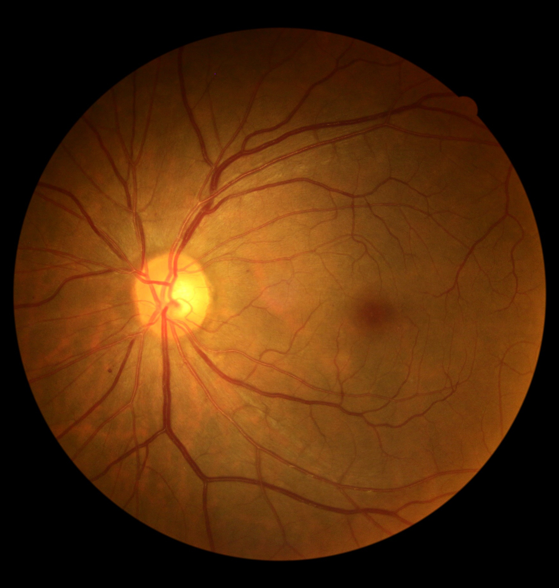
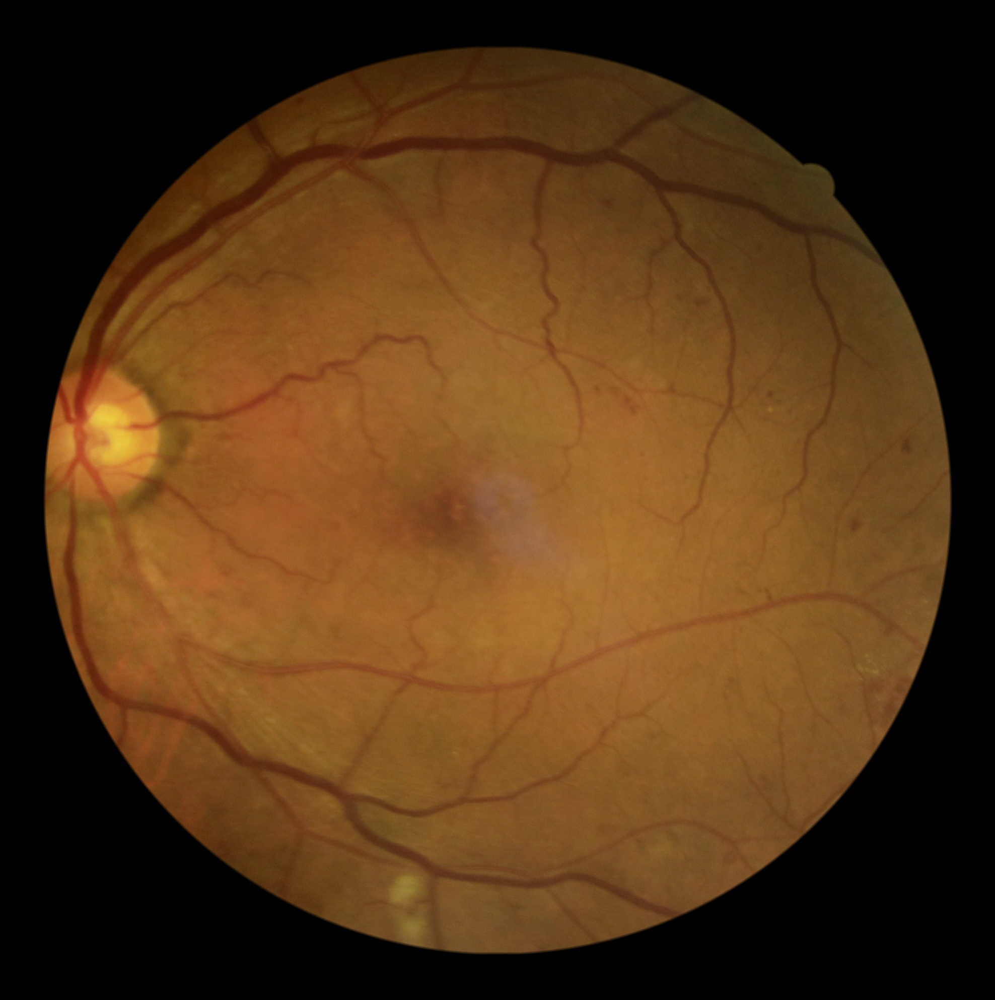
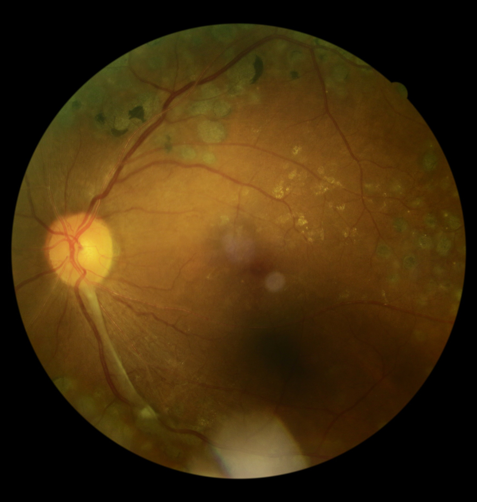
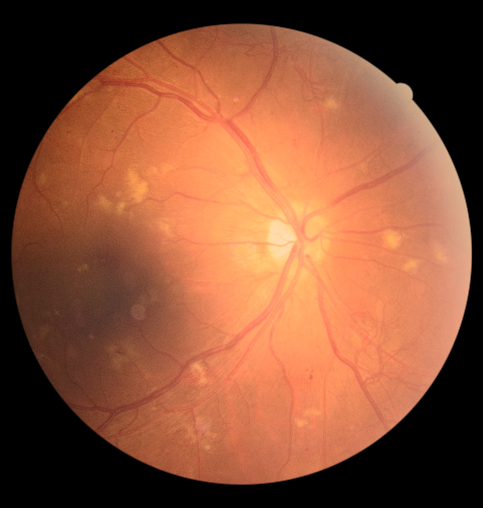
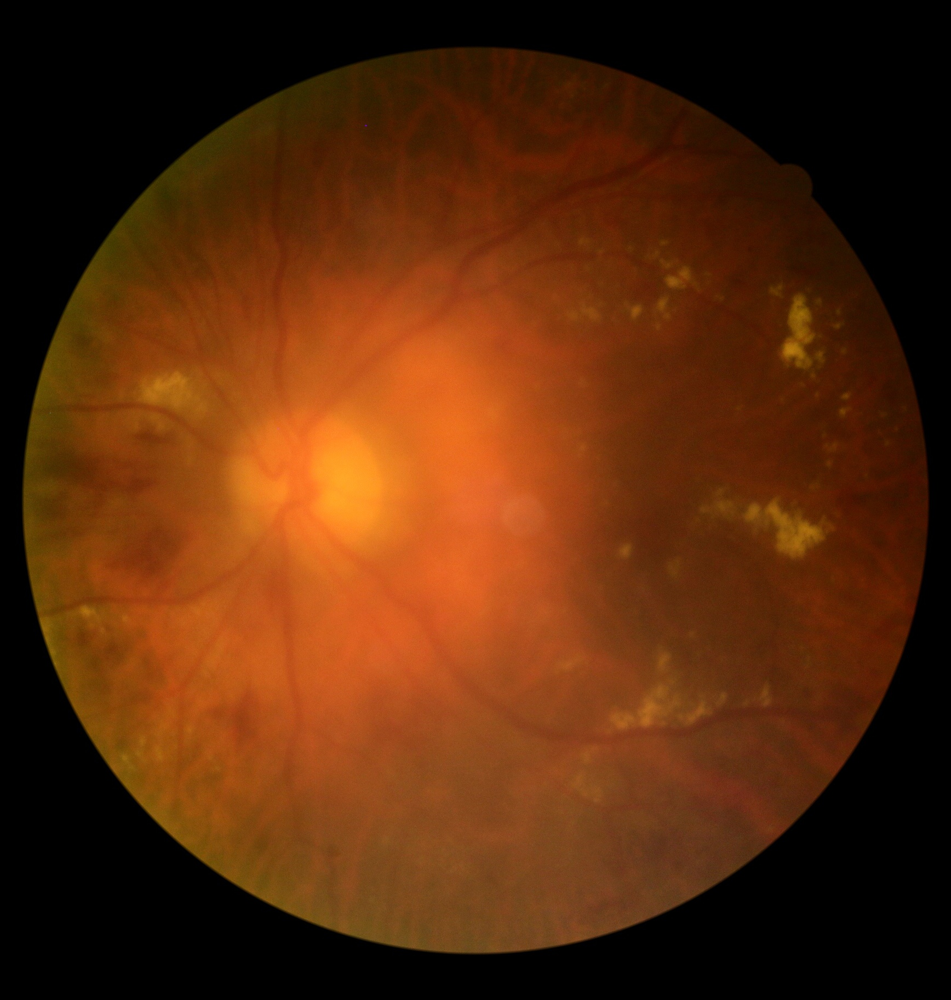
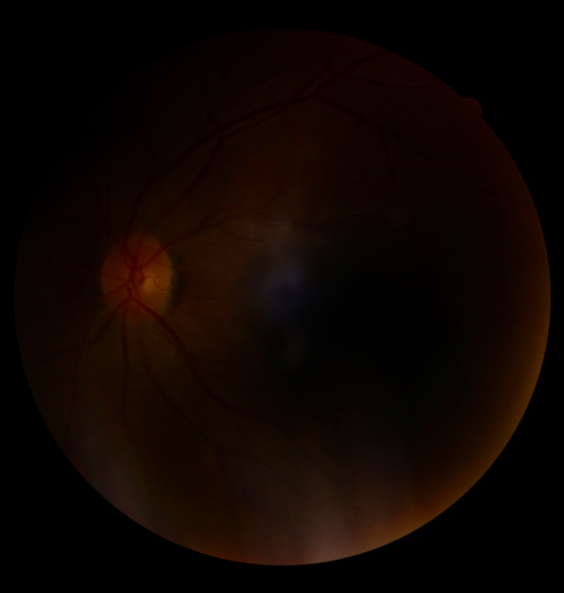
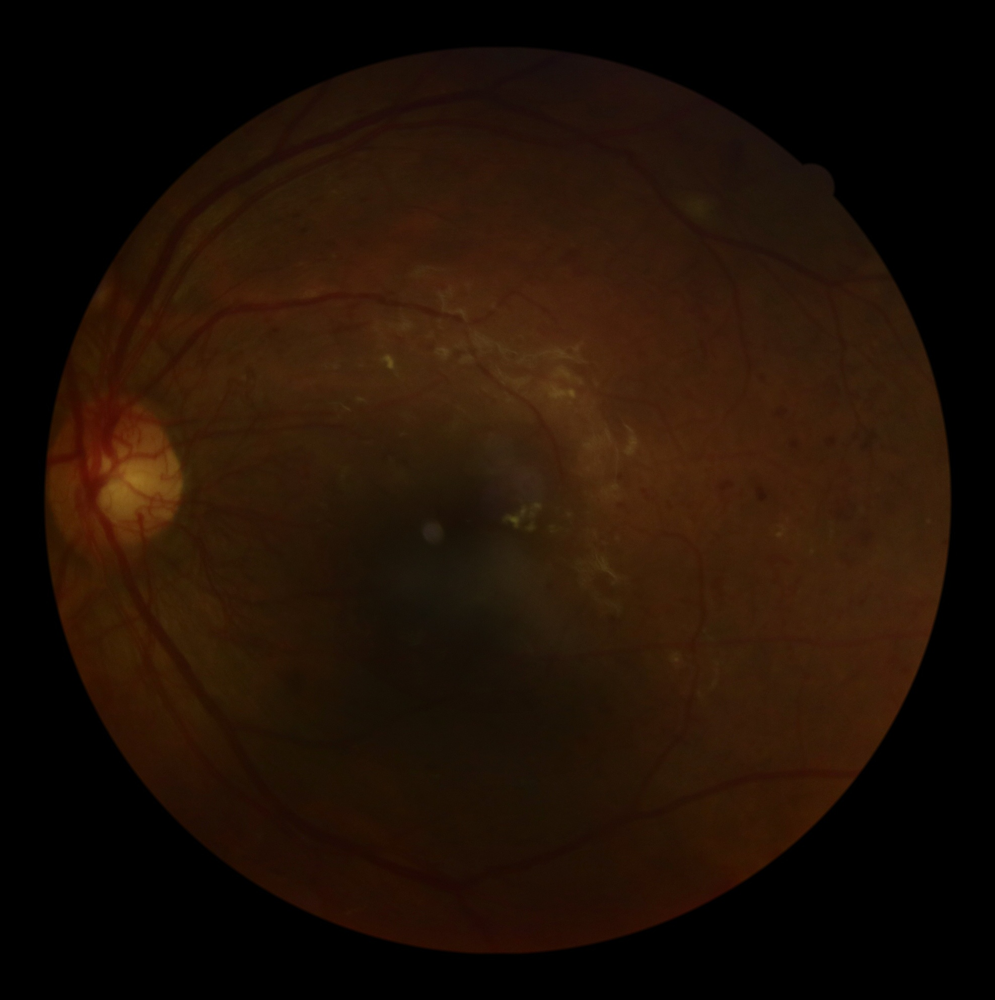
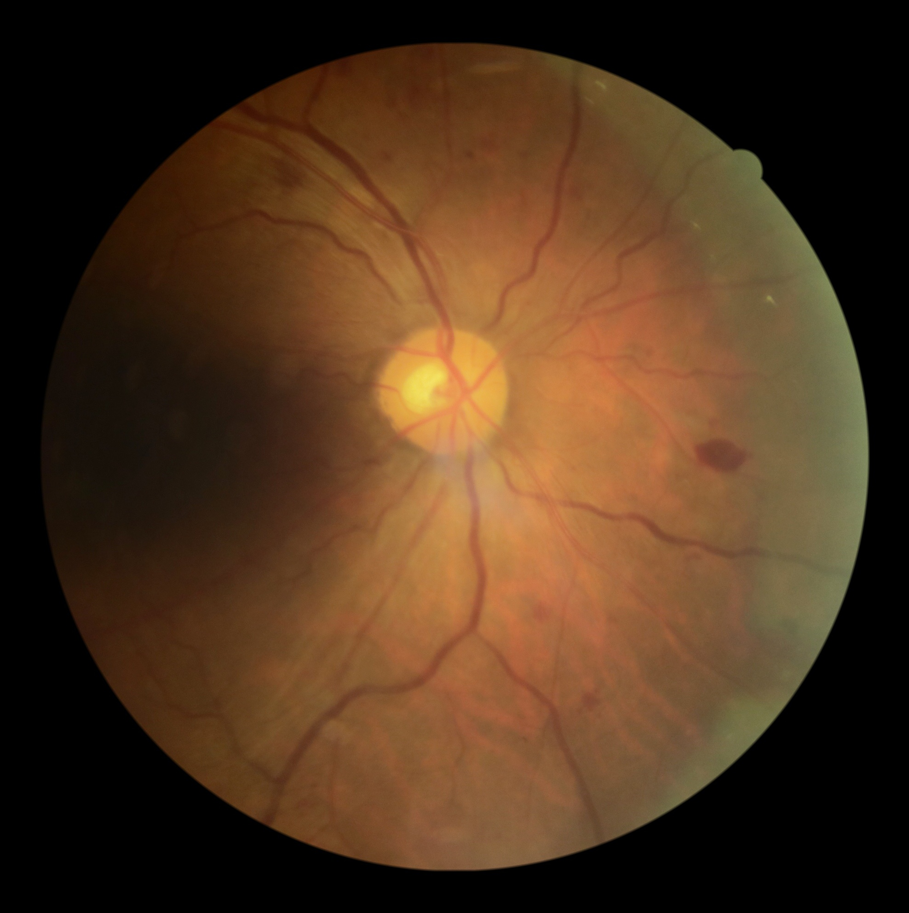

Gradable · App01_GRADABLE_APP_ROUTINE__DeepDRiD_146_l2.jpgClarity 10 · Field 8 · Artifact 0
Eight upstream-labelled DeepDRiD stills plus two openly licensed clinical-camera videos. Everything works offline from this folder.
REFERENCE_ONLY are outside the app's four-hash model scope.Upstream DeepDRiD overall-quality label = 1.




Upstream DeepDRiD overall-quality label = 0.




Browser-preview inputs only. Neither video is submitted to the still-image models.